下载sp boot¶
使用兆讯工具MH2101 ISP.exe 下载sp boot, \xielianxiong-pc\shareH\software\AF6\bringup\runthos-sp-boot-chunfen-1.1.00.830b2f9eR_3M_no_hwlk.hex
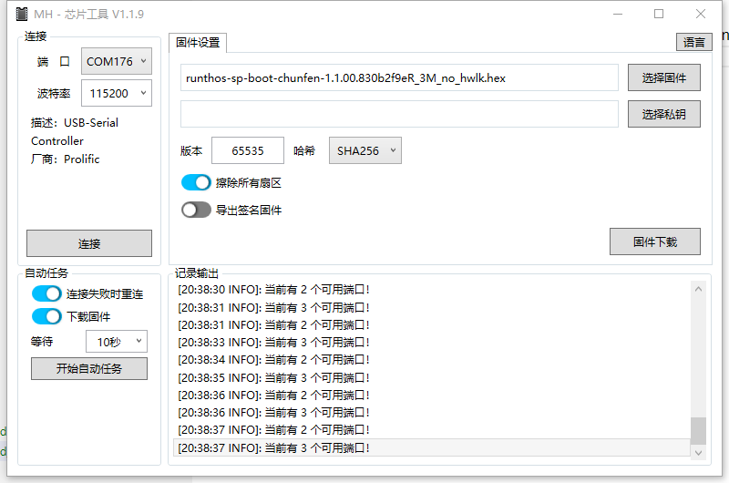
下载sp配置文件跟os¶
使用R60Loader.exe 或者其他下载sp的工具,下载sp os 跟配置文件
\xielianxiong-pc\shareH\software\AF6\bringup\T_AF6-0AW-RD6-02EU_Config_2963200_SIG_V1.0.ini
\xielianxiong-pc\shareH\software\AF6\bringup\runthos-sp-chunfen-1.0.04.f5a03ee1T_AF6_victor_1.5M.bin
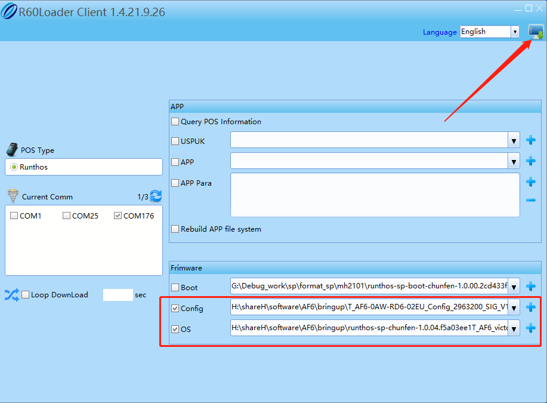
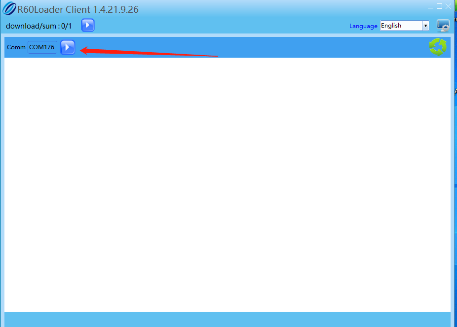
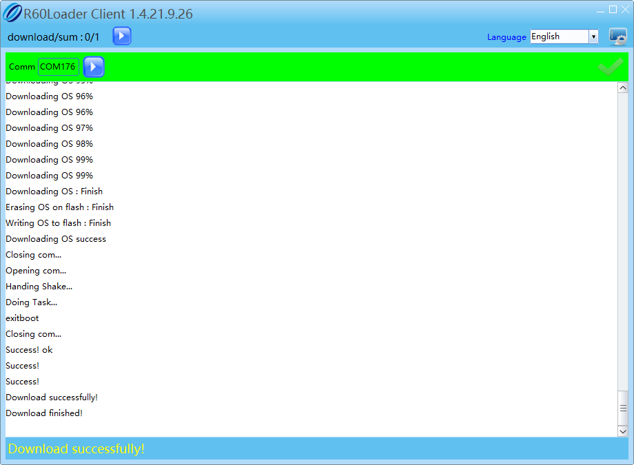
下载pac¶
使用ResearchDownload_R25.21.1401工具下载pac包
\xielianxiong-pc\shareH\software\AF6\bringup\PayDroid_AF6_bringup_4.pac
勾选格式化下载,
注意,就第一次选择勾选格式化下载,第二次下载就不用勾选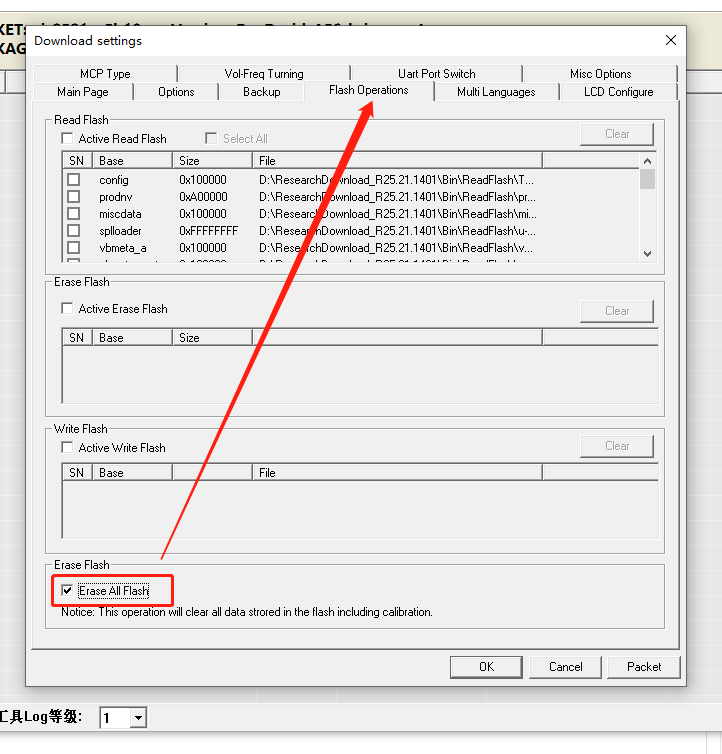
去掉备份参数,
注意,就勾选格式化的时候需要去掉备份参数,其他情况不用去掉备份参数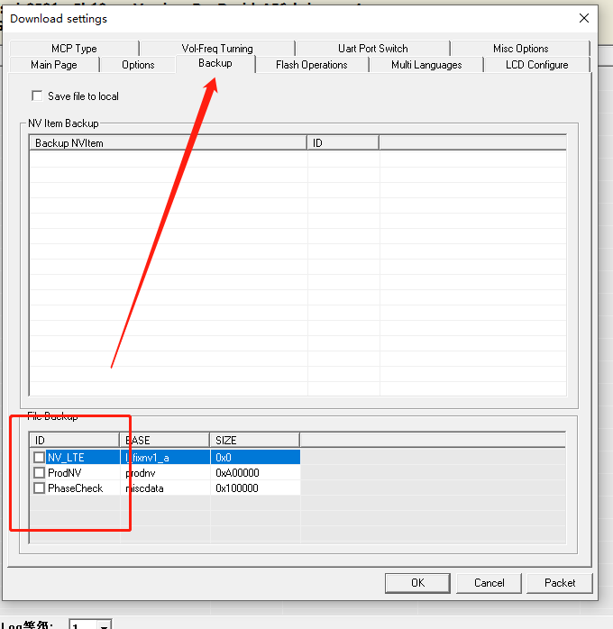
如果下载提示cfg提示报错
ap跟sp通讯之间可能还是不稳定需要去掉勾选cfg再下载一次
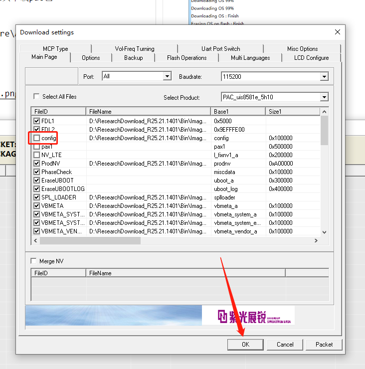
下载成功
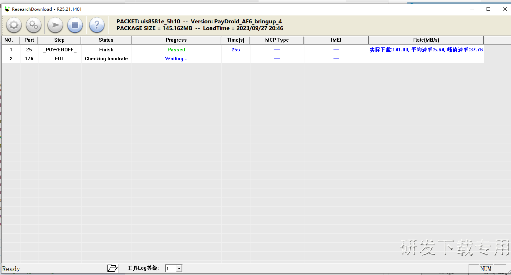
下载paydroid包¶
\xielianxiong-pc\shareH\software\AF6\bringup\PayDroid_AF6_bringup_3.paydroid
按住音量上键,插拔usb,机器自动进入bootloader下载模式
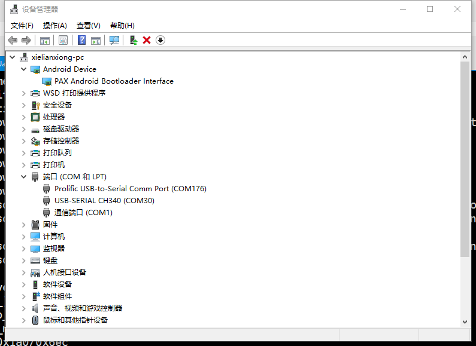
下载paydroid包
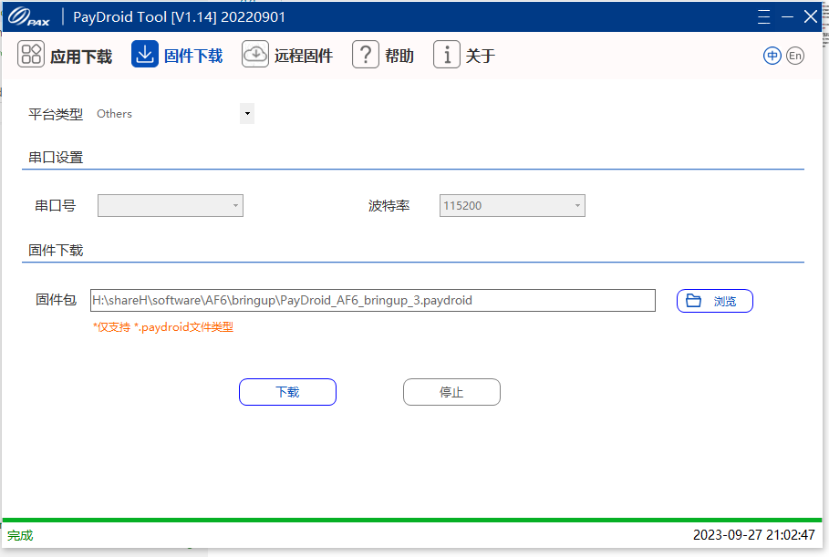
烧录license¶
电脑插入展锐的u盾
打开simba R8.23.3054_P1工具,选择烧录license seq文件 ,\xielianxiong-pc\shareH\software\AF6\bringup\Authorization_A12.seq
点击simba开启
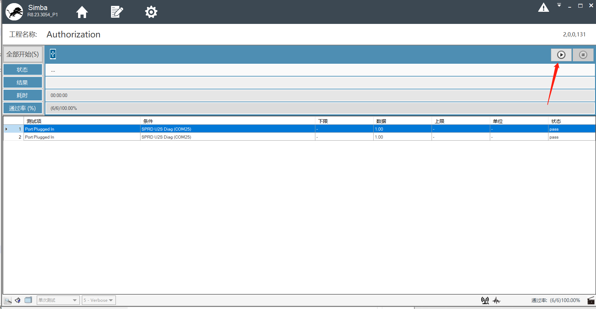
下载成功
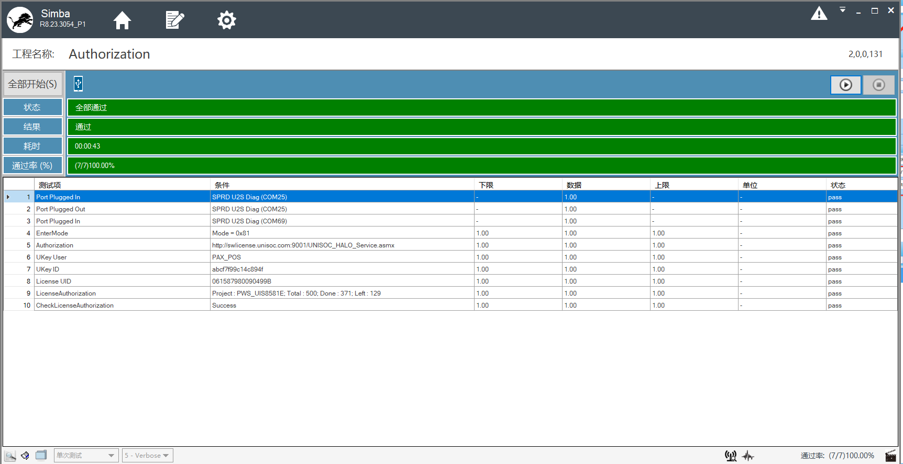